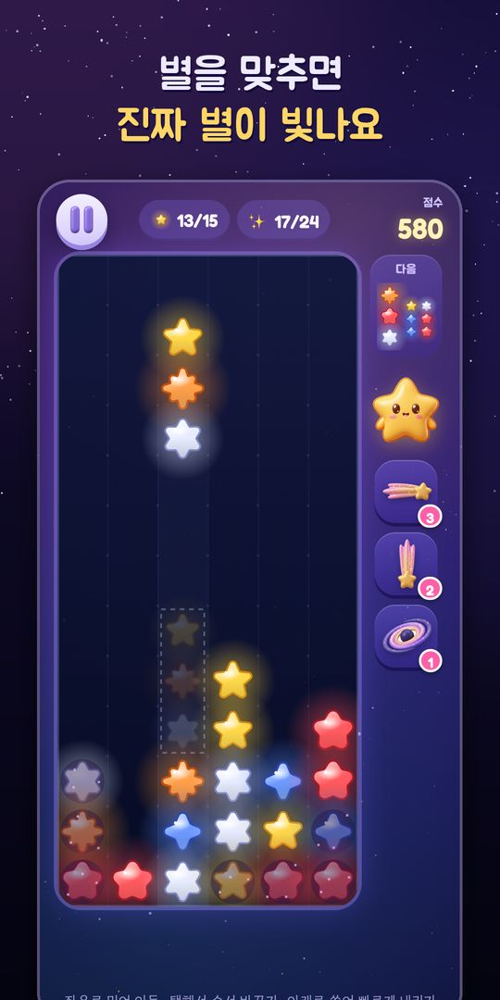
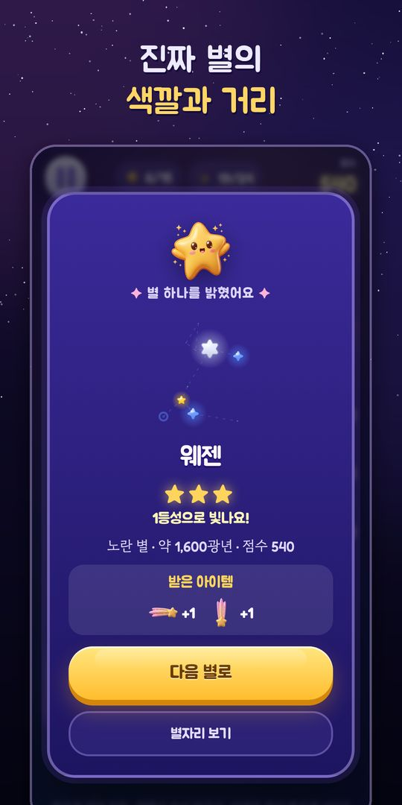
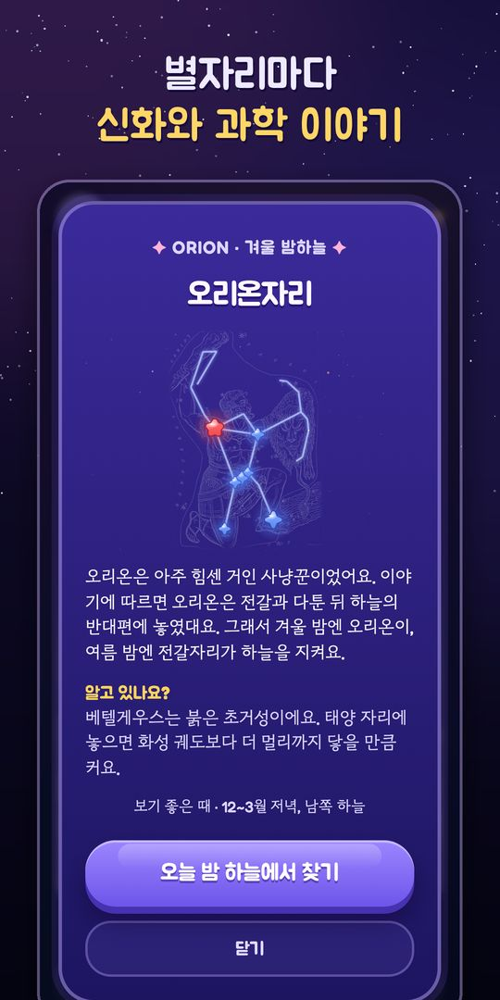
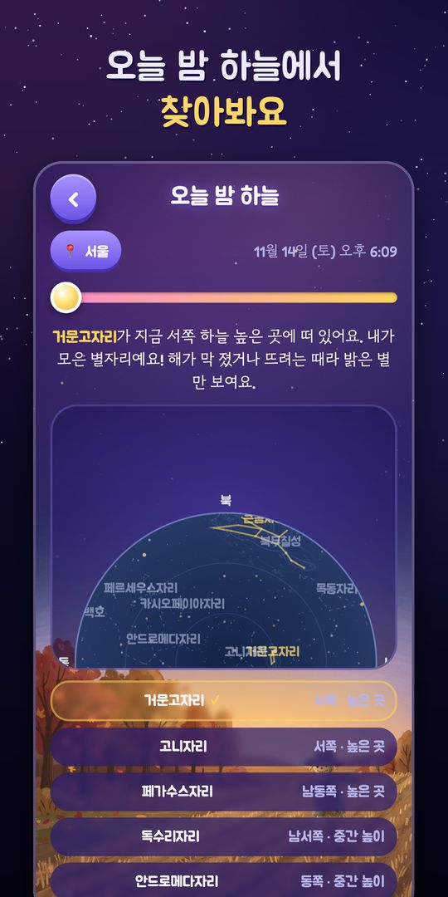

별빛 낙하: 별자리 퍼즐
떨어지는 별을 맞춰 진짜 별자리를 밝혀요
곧 출시

별빛 낙하는 스테이지 하나하나가 진짜 별인 차분하고 예쁜 퍼즐 게임이에요. 세 개씩 떨어지는 별을 내려놓고, 같은 색 별을 셋 이상 맞추고, 콤보를 만들어 보세요. 스테이지를 깨면 그 별이 별자리 안에서 진짜 색깔과 실제 거리와 함께 빛나요.
게임 화면




별자리 여행
- 사계절 별자리 18개: 오리온자리, 큰곰자리, 전갈자리, 카시오페이아자리 등
- 별 하나가 스테이지 하나, 별 색깔은 실제 별의 온도를 따라가요 (파란 별이 가장 뜨겁고 붉은 별이 가장 차가워요)
- 별자리를 완성하면 선이 이어지고 그 별자리의 이야기를 읽을 수 있어요
- 진짜 사실로 만든 특별 스테이지: 알골의 식으로 판이 어두워지고, 미자르의 쌍둥이 별은 두 배로 세고, 유성우가 쏟아지고, 플레이아데스에는 일곱 자매가 숨어 있어요
진짜 하늘을 배워요
- 오늘 밤 하늘: 내 도시에서 지금 별자리가 어디 있는지 보여 줘요
- 내 밤하늘: 밝힌 별을 한 장의 별지도에 모아요
- 별자리 도감: 신화, 과학 이야기, 별 정보를 모두 담았어요
누구나 즐겁게
- 가로 혜성, 세로 혜성, 블랙홀 아이템을 플레이하며 얻어요
- 레벨마다 빨라지는 클래식 모드
- 오프라인 플레이, 10개 언어, 전면 광고 없음
별빛 낙하 프로 (한 번 결제)
- 배너 광고 없음, 광고 없이 이어서 하기와 다음 조각 미리보기
- 남쪽 하늘 팩: 남십자자리, 알파 센타우리가 있는 켄타우루스자리, 카노푸스가 있는 용골자리, 남쪽삼각형자리
- 동양 별자리 팩: 옛 별 이름으로 만나는 북두칠성, 그리고 28수의 사신(청룡·현무·백호·주작)
진짜 자료로
- 별 위치는 예일 밝은 별 목록을 쓰고, 거리와 사실은 최신 자료로 확인했어요